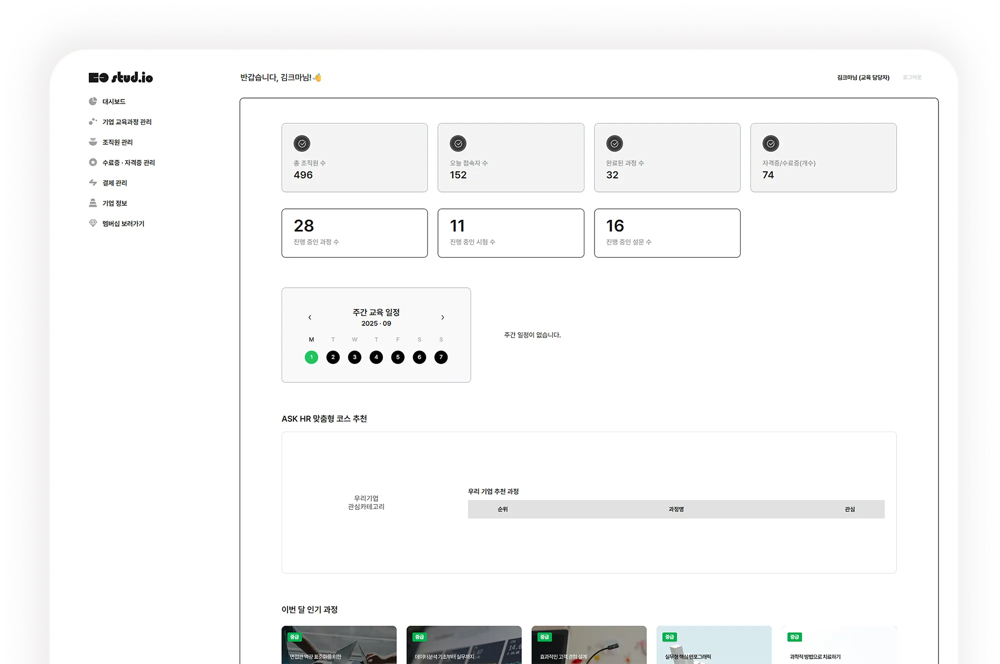
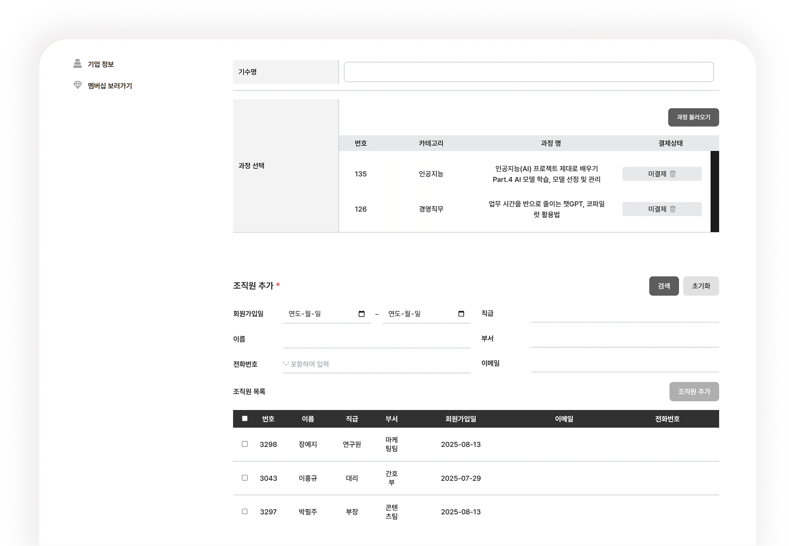
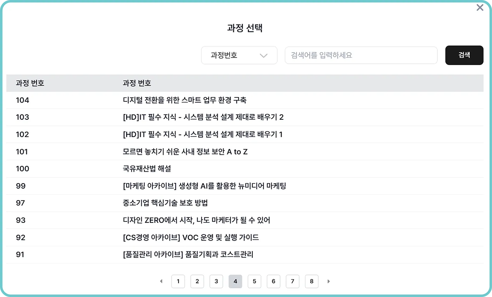
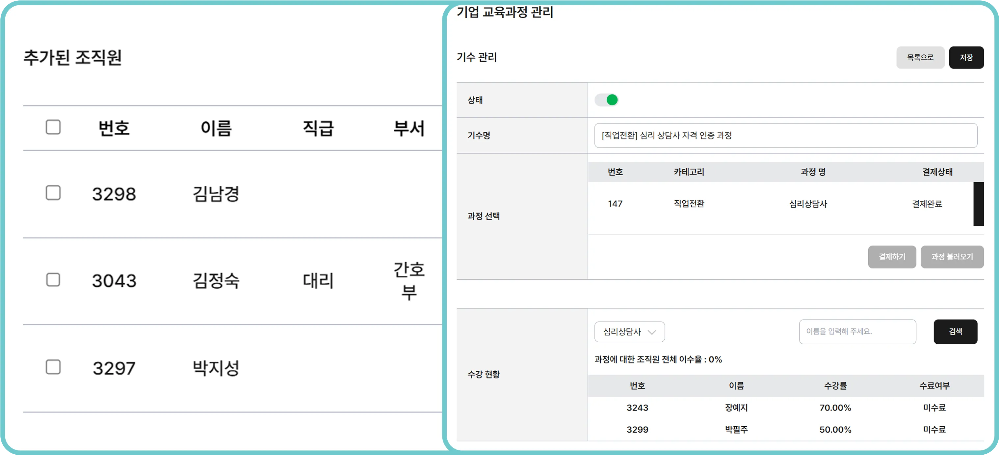
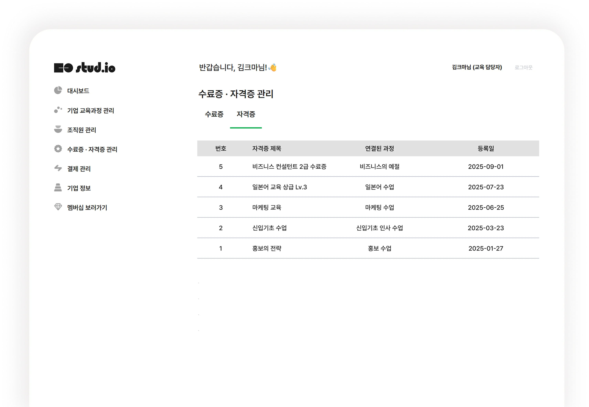
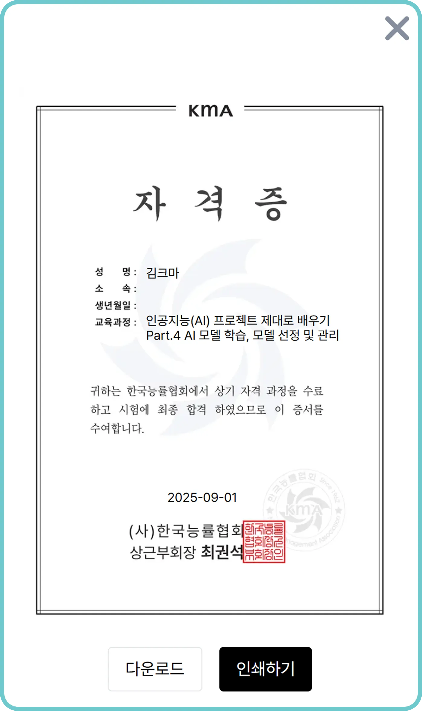
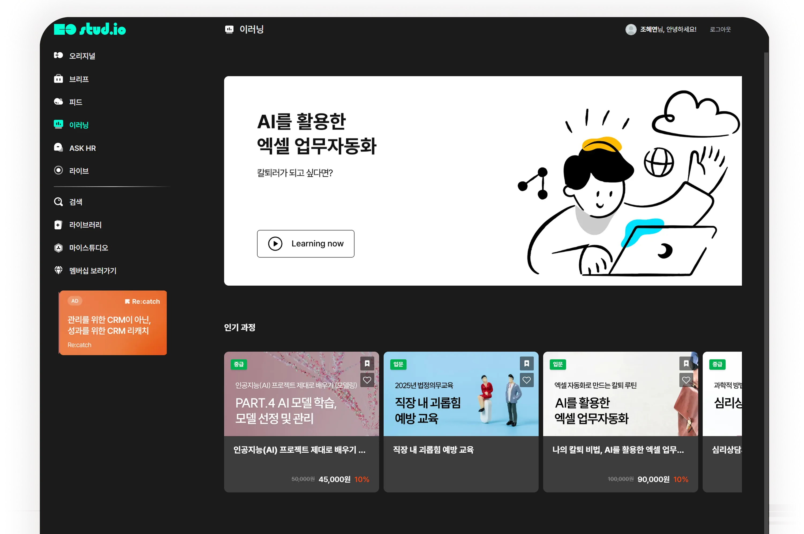

쉽게 확인하는 대시보드
개별 수료증과 자격증을 체계적으로 확인할 수 있어 조직원 별 교육 이수 현황을 실시간으로 확인 할 수 있습니다.
필요한 정보를 한눈에 파악할 수 있어 교육 운영이 더 쉬워집니다.

현재 진행 중인 과정, 시험, 설문 현황까지 한 눈에 확인 할 수 있습니다.
또한 ASK HR 맞춤형 코스 추천을 통해,
우리 기업의 관심 카테고리에 맞춘 우선순위 높은 과정을 손쉽게 선택할 수 있습니다.
화면을 클릭해보세요!
NEXT체계적인 교육 과정 관리
조직 구성원별 학습 수준과 목적에 맞는 교육 과정을 설계할 수 있습니다.
기수별 운영부터 등록, 이수현황, 인원별 관리까지 교육 전반을 통합적으로 관리할 수 있습니다.


총 조직원 수, 오늘 접속자 수, 완료된 과정 수, 발급된 수료증·자격증 수를 비롯해 현재 진행 중인 과정, 시험, 설문 현황까지 한 눈에 확인 할 수 있습니다.

조직원 관리와 기수 운영을 클릭 한 번으로 처리하고, 이수 현황·수료율까지 확인할 수 있어, 효과적으로 통합 관리할 수 있습니다.
화면을 클릭해보세요!
NEXT체계적인 교육 과정 관리
조직 구성원별 학습 수준과 목적에 맞는 교육 과정을 설계할 수 있습니다.
기수별 운영부터 등록, 이수현황, 인원별 관리까지 교육 전반을 통합적으로 관리할 수 있습니다.


화면을 클릭해보세요!
NEXT필수교육부터 직무 교육까지
조직 구성원별 학습 수준과 목적에 맞는 교육 과정을 설계할 수 있습니다.
기수별 운영부터 등록, 이수현황, 인원별 관리까지 교육 전반을 통합적으로 관리할 수 있습니다.

화면을 클릭해보세요!
CLEAR